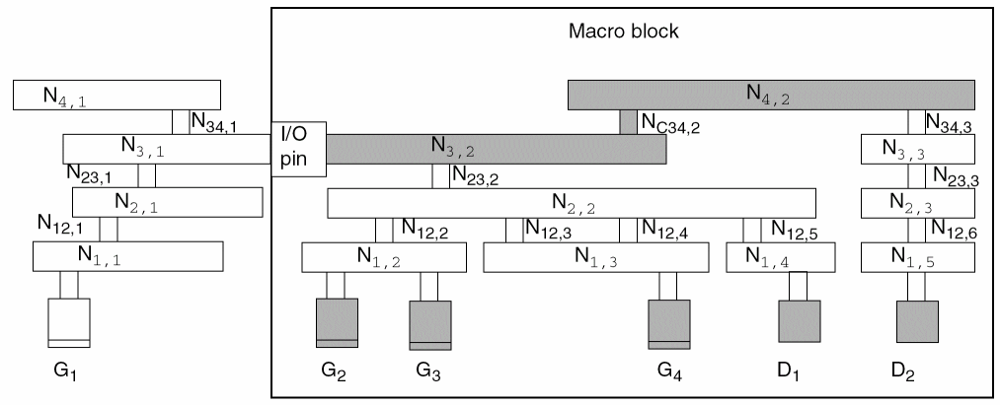

C
Calculating and Fixing Process Antenna Violations
This appendix describes process antenna violations and how you can use the router to correct them. It includes the following sections:
- Overview
- Using Process Antenna Keywords in the LEF and DEF Files
- Calculating Antenna Ratios
- Checking for Antenna Violations
- Using Antenna Diode Cells
- Using DiffUseOnly
- Calculations for Hierarchical Designs
Overview
During deep submicron wafer fabrication, gate damage can occur when excessive static charges accumulate and discharge, passing current through a gate. If the area of the layer connected directly to the gate or connected to the gate through lower layers is large relative to the area of the gate and the static charges are discharged through the gate, the discharge can damage the oxide that insulates the gate and cause the chip to fail. This phenomenon is called the process antenna effect (PAE).
To determine the extent of the PAE, the router calculates the area of the layer relative to the area of the gates connected to it, or connected to it through lower layers. The number it calculates is called the antenna ratio. Each foundry sets a maximum allowable antenna ratio for the chips it fabricates.
For example, assume a foundry sets a maximum allowable antenna ratio of 500. If a net has two input gates that each have an area of 1 square micron, any metal layers that connect to the gates and have an area larger than 1,000 square microns have process antenna violations because they would cause the antenna ratio to be higher than 500:
To tell the router the values to use when it calculates the antenna ratio, you set antenna keywords in the LEF and DEF files. The router measures potential damage caused by PAE by checking the ratio it calculates against the values specified by the antenna keywords. When it finds a net whose antenna ratio for a specified layer exceeds the maximum allowed value for that layer, it finds a process antenna violation and attempts to fix it using one or both of the following methods:
- Changing the routing so the routing layers connected to a gate or connected to a gate through lower layers are not so large that they build enough static charge to damage the gate
- Inserting diodes that protect the gate by providing an alternate path to discharge the static charge
LEF can specify several types of antenna ratios, including ratios for PAE damage on one layer only and ratios calculated by adding accumulated damage on several layers. In addition, LEF can specify ratios based on the area of the metal wires or the cut area of vias.
What Are Process Antennas?
In a chip manufacturing process, metal layers are built up, layer by layer, starting with the first-level metal layer (usually referred to as metal1). Next, the metal1-metal2 vias are created, then the second-level metal layer, then metal2-metal3 vias, and so on.
On each metal layer, metal is initially deposited so it covers the entire chip. Then, the unneeded portions of the metal are removed by etching, typically in plasma (charged particles).
Figure C-1 shows a section of an imaginary chip after the unneeded metal from metal2 is removed.
-
Gate areas for transistors are labelled
Gk, where k is a sequential number starting with1. -
Wire segments are labelled
Ni,j -
Nodes are labelled so that all pieces of the metal geometry on layer metali that are electrically connected by conductors at layers below metali belong to the same node. For example, the two metal2 wire segments that belong to node
N2,1are electrically connected to gatesG1,G2,andG3by a piece of wire on metal1 (labelledN1,2).
Thick oxide insulates the already-fabricated structures below metal2, preventing them from direct contact with the plasma. The metal2 geometries, however, are exposed to the plasma, and collect charge from it. As the metal geometries collect charge, they build up voltage potential.
Because the metal geometries collect charge during the metallization process, they are referred to as process antennas. In general, the more area covered by the metal geometries that are exposed to the plasma (that is, the larger the process antennas), the more charge they can collect.
In Figure C-1, note the following:
-
Node
N1,1is electrically connected to gatesG1andG2. -
Node
N1,2is electrically connected to gateG3. -
Node
N2,1(nodeN2,1has two pieces of metal) is electrically connected to gatesG1,G2, andG3. -
Node
N1,3and nodeN2,2are electrically connected to gateG4. -
Node
N1,4and nodeN2,3are electrically connected to the diffusion (diode).
What Is the Process Antenna Effect (PAE)?
If the voltage potential across the gate oxide becomes large enough to cause current to flow across the gate oxide, from the process antennas to the gates to which the process antennas are electrically connected, the current can damage the gate oxide. The process antenna effect (PAE) is the term used to describe the build-up of charge and increase in voltage potential. The larger the total gate area that is electrically connected to the process antennas on a specific layer, the more charge the connected gates can withstand.
In the imaginary chip in Figure C-1, if the current were to flow, the following would happen, as a result of the node-gate connections:
-
The charge collected by process antennas on nodes
N1,1,N1,2, andN2,1would be discharged through one or more of gatesG1,G2, andG3. -
The charge collected by process antennas on nodes
N1,3andN2,2would be discharged through gateG4. -
The charge collected by process antennas on node
N1,4andN2,3would be discharged through the diode.
What Is the Antenna Ratio?
Because the total gate area that is electrically connected to a node (and therefore connected to the process antennas) determines the amount of charge from the process antennas the electrically connected gates can withstand, and because the size of the process antennas connected to the node determines how much charge the antennas collect, it is useful to calculate the ratio of the size of the process antennas on a node to the size of the gate area that is electrically connected to the node. This is the antenna ratio. The greater the antenna ratio, the greater the potential for damage to the gate oxide.
If you check a chip and obtain an antenna ratio greater than the threshold specified by the foundry, gate damage is likely to occur.
Figure C-2 shows the same section of the imaginary chip as the previous figure. The shaded areas in this figure represent the process antennas on node N2,1 and the gates to which they connect: gates G1, G2, and G3. The shaded gates discharge the electricity collected by the process antennas on node N2,1.
What Can Be Done to Improve the Antenna Ratio?
If there is an alternate path for the current to flow, the charge on the node can be discharged through the alternate path before the voltage potential reaches a level that damages the gate. For example, a Zener diode, which allows current to flow in the reverse direction when the reverse bias reaches a specified breakdown voltage, provides an alternate path, and helps avoid building up so much charge at the node that the charge is discharged through the gate oxide. Diffusion features that form the output of a logic gate (source and drain of transistors) can provide such an alternate discharge path.
Routers typically use two methods to decrease the antenna ratio:
- Changing the routing by breaking the metal layers into smaller pieces
- Inserting antenna diode cells to discharge the current
Both of these methods supply alternate paths for the current. For details about how to specify antenna diode cells, see “Using Antenna Diode Cells”.
Using Process Antenna Keywords in the LEF and DEF Files
You tell the router the values to use for the gate, diffusion, and metal areas by setting values for process antenna keywords in the LEF and DEF files for your design. You also tell the router the values to use for the threshold process antenna ratios by setting the keywords.
The following table lists LEF version 5.5 antenna keywords.
| If the keyword ends with ... | It refers to ... | Examples |
|---|---|---|
|
Use
DIFFUSEONLY if you want the multiplier to apply only when connecting to diffusion. For more information, see “Using DiffUseOnly”. |
||
|
|
Calculating Antenna Ratios
Tools should calculate antenna ratios using one of the following models:
-
The partial checking model
Using this model, you calculate damage to gates by process antennas on one layer. For example, if you use the partial checking model to calculate the PAE referred to a gate from metal3, you do not consider any potential damages referred to that gate from metallization steps on metal1 or metal2.
You use this model to calculate a partial antenna ratio (PAR). A PAR tells you if any single metallization step is likely to inflict damage to a gate. -
The cumulative checking model
This model is more conservative than the partial checking model. It adds damage to a gate caused by the PAE referred to the gate from each metallization step, starting from metal1 up to the layer that is being checked. For example, if you use the cumulative checking model to calculate the PAE referred to a gate from metal3, you add the PAR from the relevant antenna areas on metal1, metal2, and metal3.
You use this model to calculate a cumulative antenna ratio (CAR). A CAR adds the damages on successive layers together to accumulate them as the layers are built up.
Calculating the Antenna Area
The area used to model the charge-collecting ability of a node is called the antenna area. The router calculates the antenna area for one of the following areas:
- The drawn area (the top surface area of the metal shape)
- The side area (the area of the sides of the metal shape)
The height of each side is taken from the THICKNESS statement for that layer.
Figure C-3 shows drawn and side areas.
Antenna Area Factor
You can increase or decrease the calculated antenna area by specifying an antenna area factor in the LEF file.
-
Use
ANTENNAAREAFACTORto adjust the calculation of the drawn area. -
Use
ANTENNASIDEAREAFACTORto adjust the calculation of the side area.
The default value of both factors is 1.
The final ratio check can be scaled (that is, made more or less pessimistic) by using the ANTENNAAREAFACTOR or ANTENNASIDEAREAFACTOR values that are used to multiply the final PAR and CAR values.
ANTENNA values are always unscaled values; only the final ratio-check is affected by the scale factors.Calculating a PAR
The general PAR(m1) equation for a single layer is calculated as:
The existing ANTENNAAREAFACTOR statement is shown as metalFactor for the metal area. It has no effect on the diff_area, gate_area, or cut_area shown. Likewise, the ANTENNAAREADIFFREDUCEPWL statement is shown as diffMetalReduceFactor, the ANTENNAAREAMINUSDIFF statement is shown as minusDiffFactor, and the ANTENNAGATEPLUSDIFF statement is shown as plusDiffFactor. For cut layer, the ratio equation illustrates the effect of an ANTENNAAREAFACTOR cutFactor statement as metalFactor. If there is no preceding ANTENNAAREAFACTOR statement, the metalFactor value defaults to 1.0.
For single layer rules, the PAR value is compared to ANTENNA[SIDE]AREARATIO and/or ANTENNADIFF[SIDE]AREARATIO, as appropriate. For cumulative layer rules, the CAR values is compared to ANTENNACUM[SIDE]AREARATIO and/or ANTENNACUMDIFF[SIDE]AREARATIO, as appropriate.
The following example uses a simplified formula to calculate a PAR, without including the various area factors:
PAR(Ni,j, Gk) is the partial antenna ratio for node j on metali with respect to gate Gk, where Gk is electrically connected to node Ni,j by layer i or below.
Area(Ni,j) is the drawn or side area of node Ni,j.
C(Ni,j) is the set of gates Gk that are electrically connected to Ni,j through the layers below metali.
Area(Gk) is the drawn or side area of gate Gk. (The reason to include the Gk parameter for PAR is to maintain uniformity with the notation for CAR.)
Ni,j, the PAR(Ni,j, Gk) for all gates Gk that are connected to the node Ni,j using metali or below are identical. Calculations for PAR on the First Metal Layer
Figure C-4 shows a section of an imaginary chip after the first metal layer is processed.
To calculate PAR(Ni,j, Gk) for node N1,1, a node on the first metal layer, with respect to gate G1, use the following formula:
Because gates G1 and G2 both connect to node N1,1, the following statement is true:
PAR(N1,1,G1) = PAR(N1,1,G2)
To calculate PAR for node N1,2, another node on the first metal layer, with respect to gate G3, use the following formula:
To calculate PAR(Ni,j, Gk) for node N1,3, another node on the first metal layer, with respect to gate G4, use the following formula:
Calculations for PAR on the Second Metal Layer
Figure C-5 shows the chip after the second metal layer is processed.
N2,1 consists of two pieces of metal on the second layer that are electrically connected at this step in the fabrication process. Therefore, to calculate PAR(N2,1,G1), you must add the area of both pieces together.
To calculate PAR(Ni,j,G for node k)N2,1, a node on the second metal layer, with respect to gate G1, use the following formula:
PAR(N2,1,G1) = PAR(N2,1,G2) = PAR(N2,1,G3)
Calculations for PAR on the Third Metal Layer
Figure C-6 shows the chip after the third metal layer is processed.
To calculate PAR(Ni,j, Gk)for node N3,1, a node on the third metal layer, with respect to gate G1, use the following formula:
PAR(N3,1,G1) = PAR(N3,1,G2) = PAR(N3,1,G3) = PAR(N3,1,G4)
Calculations for PAR on the Fourth Metal Layer
Figure C-7 shows the chip after the fourth metal layer is processed.
To calculate PAR(Ni,j, Gk) for the fourth metal layer, use the following formula:
PAR(N4,1,G1) = PAR(N4,1,G2) = PAR(N4,1,G3) = PAR(N4,1,G4)
N4,1 is connected to the diffusion layer through the output diode. After the router calculates the antenna ratio, it compares its calculations to the area of the diffusion, instead of the area of the gates.Calculating a CAR
To calculate a CAR, the router adds the PARs for all the relevant nodes on the specified or lower metal layers that are electrically connected to a gate. Therefore, CAR(Ni,j,Gk) designates the cumulative damage to gate Gk by metallization steps up to the current level of metal, i.
To create a single accumulative model that combines both metal and cut damage into one model, specify the ANTENNACUMROUTINGPLUSCUT statement for the layer, so that:
This means that the CAR from the cut layer below this metal layer is accumulated, instead of the CAR from the metal layer below this metal layer.
The router calculates an antenna ratio with respect to a node-gate pair. To find the CAR for the node Ni,j - gate Gk pair, you trace the path of the current between gate Gk and node Ni,j and add the PAR with respect to gate Gk for the all nodes in the path between the first metal layer and layer i that you can trace back to Gk.
N1,2 is not shaded because it was not electrically connected to G2 when metal1 was processed. That is, because the charge accumulated on N1,2 when metal1 was processed cannot damage gate G1, the router does not include it in the calculations for CAR(N2,1,G1).
Another way to explain this is to say that the PAE from node N1,2 with respect to gate G2 is 0.Calculations for CAR on the First Metal Layer
Figure C-9 shows the chip after the first metal layer is processed.
Because PAR(N1,1,G1) equals PAR(N1,1,G2), CAR(N1,1,G1) equals CAR(N1,1,G2).
CAR(Ni,j,Gk) equals CAR(Ni,j,Gk’) if the two gates Gk and Gk’ are electrically connected to the same node on metal1, the lowest layer that is subject to the process antenna effect.Calculations for CAR on the Second Metal Layer
Figure C-10 shows the chip after the second metal layer is processed.
N1,2 is not included in the calculations for CAR(N2,1,G1) because it was not electrically connected to G1 when metal1 was processed. That is, because the charge accumulated on N1,2 when metal1 was processed cannot damage gate G1, the router does not include it in the calculations for CAR(N2,1,G1).
CAR(N2,1,G1) = PAR(N1,1,G1) + PAR(N2,1,G1)
CAR(N2,1,G2) = PAR(N1,1,G2) + PAR(N2,1,G2)
Gates G1 and G2 have the same history with regard to PAE because they are connected to the same piece of metal1, so they have the same CAR for any node on a specified layer:
Calculations for CAR on the Third Metal Layer
Figure C-11 shows the chip after the third metal layer is processed.
Gate G1
CAR(N3,1,G1) = PAR(N1,1,G1) + PAR(N2,1,G1) + PAR(N3,1,G1)
Gate G2
CAR(N3,1,G2) = PAR(N1,1,G2) + PAR(N2,1,G2) + PAR(N3,1,G2)
CAR(N3,1,G1) equals CAR(N3,1,G2) because gates G1 and G2 are both electrically connected to the same node, N1,1, on metal1 and therefore have the same history with regard to PAE. Therefore, the formula for CAR(N, 3,2G2) is CAR(N3,1,G1) = CAR(N3,1,G2)
Gates G3 and G4
Gates G3 and G4 are not connected to the same node on metal1 and therefore do not have the same history with regard to PAE. Therefore, the CAR(N3,1,G3) and CAR(N3,1,G4) do not necessarily equal CAR(N3,1,G1) or CAR(N3,1,G2).
In Figure C-12, the relevant areas for calculating CAR for gate G3 are shaded.
CAR(N3,1,G3) = PAR(N1,2,G3) + PAR(N2,1,G3) + PAR(N3,1,G3)
In Figure C-13, the relevant areas for calculating CAR for gate G4 are shaded.
CAR(N3,1,G4) = PAR(N1,3,G4) + PAR(N2,2,G4) + PAR(N3,1,G4)
Calculations for CAR on the Fourth Metal Layer
The following figure shows the chip after the fourth metal layer is processed.
N4,1 is connected to the diffusion layer through the output diode. After the router calculates the antenna ratio, it compares its calculations to the area of the diffusion, instead of the area of the gates.Gates G1 and G2
In Figure C-14, the relevant areas for calculating CAR(N4,1,G1) and CAR(N4,1,G2) are shaded.
CAR(N4,1,G1) = PAR(N1,1,G1) + PAR(N2,1,G1)
+ PAR(N3,1,G1) + PAR(N4,1,G1)
CAR(N4,1,G2) = PAR(N1,1,G2) + PAR(N2,1,G2)
+ PAR(N3,1,G2) + PAR(N4,1,G2)
Gate G3
In Figure C-15, the relevant areas for calculating CAR(N4,1,G3) are shaded.
CAR(N4,1,G3) = PAR(N1,2,G3) + PAR(N2,1,G3)
+ PAR(N3,1,G3) + PAR(N4,1,G3)
CAR(N4,1,G3) does not equal CAR(N4,1,G1) or CAR(N4,1,G2) because it is not connected to the same node on metal1.
Gate G4
In Figure C-16, the relevant areas for calculating CAR(N4,1,G4) are shaded.
CAR(N4,1,G4) = PAR(N1,3,G4) + PAR(N2,2,G4)
+ PAR(N3,1,G4) + PAR(N4,1,G4)
CAR(N4,1,G4) does not equal CAR(N4,1,G1), CAR(N4,1,G2), or CAR(N4,1,G3) because it is not connected to the same node on metal1.
Calculating Ratios for a Cut Layer
The router calculates damage from a cut layer separately from damage from a metal layer. Calculations for the cut layers do not use side area modelling.
Calculating a PAR on a Cut Layer
The general PAR(ci) equation for a single layer is calculated as:
The existing ANTENNAAREAFACTOR statement is shown as cutFactor for the metal area. Likewise, the ANTENNAAREADIFFREDUCEPWL statement is shown as diffAreaReduceFactor, the ANTENNAAREAMINUSDIFF statement is shown as minusDiffFactor, and the ANTENNAGATEPLUSDIFF statement is shown as plusDiffFactor. For cut layer, the ratio equation illustrates the effect of an ANTENNAAREAFACTOR cutFactor statement as metalFactor. If there is no preceding ANTENNAAREAFACTOR statement, the metalFactor value defaults to 1.0.
In the figures and text that follow,
-
Cij is the cut layer between metaliand metalj. -
NCij,kspecifies an electrically connected node onCij. - The nodes are numbered sequentially, from left to right.
Figure C-17 shows the chip after the C12 process step.
As in calculations on the metal layers,
PAR(NC12,1,G1) = PAR(NC12,1,G2)
Calculating a CAR on a Cut Layer
As explained in
To create a single accumulative model that combines both metal and cut damage into one model, specify the ANTENNACUMROUTINGPLUSCUT statement for the layer, so that:
This means that the CAR from the metal layer below this cut layer is accumulated, instead of the CAR from the cut layer below this cut layer.
Figure C-18 shows the chip after the C23 process step.
The router calculates the CAR with respect to gate G3 after the cut C23 process step as follows:
Figure C-19 shows the chip after the C34 process step.
The router calculates the CAR with respect to gate G3 after the cut C34 process step as follows:
Checking for Antenna Violations
For each metal layer, the router performs several antenna checks, using the keywords and values specified in the LEF or DEF file. The router can perform the following four types of antenna checks, depending on the keywords you set in the LEF file:
Area Ratio Check
The area ratio check compares the PAR for each layer to the value of the ANTENNAAREARATIO or ANTENNADIFFAREARATIO.
The router calculates the PAR as follows:
According to the formula above, the area ratio check finds the PAR for node Ni,j with respect to gate Gk by dividing the drawn area of the node by the area of the gates that are electrically connected to it. The final PAR is multiplied by the ANTENNAAREAFACTOR (the default value for the factor is 1) and compared to the ANTENNAAREARATIO or ANTENNADIFFAREARATIO. If the PAR is greater than the ANTENNAAREARATIO or ANTENNADIFFAREARATIO specified in the LEF file, the router finds a process antenna violation and attempts to fix it.
The link between PAR(Ni,j,Gk) and a PAE violation at node Ni,j depends on whether node Ni,j is connected to a piece of diffusion, as follows:
-
If there is no connection from node
Ni,jto a diffusion area through the current and lower layers, a violation occurs when the PAR is greater than theANTENNAAREARATIO. -
If there is a connection from node
Ni,jto a diffusion area through current and lower layers, a violation occurs when the PAR is greater than theANTENNADIFFAREARATIO. -
If there is a connection from node
Ni,jto a diffusion area through current and lower layers, andANTENNADIFFAREAis not specified for an output or inout pin, the value is0.
Side Area Ratio Check
The side area ratio check compares the PAR computed based on the side area of the nodes for each layer to the value of the ANTENNASIDEAREARATIO or ANTENNADIFFSIDEAREARATIO.
The router calculates the PAR as follows:
According to the formula above, the area ratio check finds the PAR for node Ni,j with respect to gate Gk by dividing the side area of the node by the area of the gates that are electrically connected to Ni,j. The final PAR is multiplied by the ANTENNASIDEAREAFACTOR (the default value for the factor is 1) and compared to the ANTENNASIDEAREARATIO or ANTENNADIFFSIDEAREARATIO. If the PAR is greater than the ANTENNASIDEAREARATIO or ANTENNADIFFSIDEAREARATIO specified in the LEF file, the router finds a process antenna violation and attempts to fix it.
The link between PAR(Ni,j,Gk) and a PAE violation at node Ni,j depends on whether node Ni,j is connected to a piece of diffusion, as follows:
-
If there is no connection to the diffusion area through the current and lower layers, a violation occurs when the PAR is greater than the
ANTENNASIDEAREARATIO. -
If there is a connection to the diffusion area through current and lower layers, a violation occurs when the PAR is greater than the
ANTENNADIFFSIDEAREARATIO. -
If there is a connection to the diffusion area through current and lower layers, and
ANTENNADIFFAREAis not specified for an output or inout pin, the value is0.
Cumulative Area Ratio Check
The cumulative area ratio check compares the CAR to the value of ANTENNACUMAREARATIO or ANTENNACUMDIFFAREARATIO. The CAR is equal to the sum of the PARs of all nodes on the same or lower layers that are electrically connected to the gate.
ANTENNAAREARATIO or ANTENNASIDEAREARATIO for metal1, and ANTENNACUMAREARATIO or ANTENNACUMSIDEAREARATIO for the remaining metal layers.
The cumulative area ratio check finds the CAR for node Ni,j with respect to gate Gk by adding the PARs for all layers of metal, from the current layer down to metal1, for all nodes that are electrically connected Gk. The final CAR is multiplied by the ANTENNAAREAFACTOR (the default value for the factor is 1) and compared to the ANTENNACUMAREARATIO or ANTENNACUMDIFFAREARATIO. If the CAR is greater than the ANTENNACUMAREARATIO or ANTENNACUMDIFFAREARATIO specified in the LEF file, the router finds a process antenna violation and attempts to fix it.
The link between CAR(Ni,j,Gk) and a PAE violation at node Ni,j depends on whether node Ni,j is connected to a piece of diffusion, as follows:
-
If there is no connection to a diffusion area through the current and lower layers, a violation occurs when the CAR is greater than the
ANTENNACUMAREARATIO. -
If there is a connection to a diffusion area through current and lower layers, a violation occurs when the CAR is greater than the
ANTENNACUMDIFFAREARATIO. -
If there is a connection to a diffusion area through current and lower layers, and
ANTENNADIFFAREAis not specified for an output or inout pin, the value is0.
Cumulative Side Area Ratio Check
The cumulative side area ratio check compares the CAR to the value of the ANTENNACUMSIDEAREARATIO or ANTENNACUMDIFFAREARATIO.
ANTENNAAREARATIO or ANTENNASIDEAREARATIO for metal1, and ANTENNACUMAREARATIO or ANTENNACUMSIDEAREARATIO for the remaining metal layers.
The cumulative side area ratio check finds the CAR for node Ni,j with respect to gate Gk by adding the PARs for all layers of metal, from the current layer down to metal1, for all nodes that are electrically connected Gk. The final CAR is multiplied by the ANTENNASIDEAREAFACTOR (the default value for the factor is 1) and compared to the ANTENNACUMSIDEAREARATIO or ANTENNACUMDIFFAREARATIO. If the CAR is greater than the ANTENNACUMSIDEAREARATIO or ANTENNACUMDIFFAREARATIO specified in the LEF file, the router finds a process antenna violation and attempts to fix it.
-
If there is no connection to a diffusion area through the current and lower layers, a violation occurs when the CAR is greater than the
ANTENNACUMSIDEAREARATIO. -
If there is a connection to a diffusion area through current and lower layers, a violation occurs when the CAR is greater than the
ANTENNACUMSIDEAREARATIO. -
If there is a connection to a diffusion area through current and lower layers, and
ANTENNACUMDIFFAREAis not specified for an output or inout pin, the value is0.
Cut Layer Process Antenna Model Examples
-
Example 1
To create the following process antenna rule for a cut layer via1:
cut_area / (gate_area + 2.0 x diff_area) <= 10
Cut layers should include the following information:ANTENNAGATEPLUSDIFF 2.0 ;
ANTENNADIFFAREARATIO 10 ;
-
Example 2
Assume the following process antenna rule:
cut_area x PWL(diff_area) / gate_area <= 10
This rule uses a cumulative model with diffusion area reduction function, where:-
PAR = (cut_area x diffReduceFactor) / gate_area <= 10 -
diffReduceFactor = 1.0 for diff_area < 0.1μm2 -
diffReduceFactor = 0.2 for diff_area >= 0.1 μm2
Cut layers should include the following information:ANTENNAAREADIFFREDUCEPWL ( ( 0.0 1.0 ) ( 0.0999 1.0 ) ( 0.1 0.2 )
( 1000.0 0.2 ) ) ;
ANTENNACUMDIFFAREARATIO 10 ;
-
For examples of models that use the ANTENNACUMROUTINGPLUSCUT and the ANTENNAAREAMINUSDIFF rules, see the examples below in “Routing Layer Process Antenna Models.”
Routing Layer Process Antenna Model Examples
The following process antenna rule examples use the topology shown in Figure C-20. In this figure, there are two polysilicon gates (G1, G2), one diffusion connection (D1), contacts (C), and via (V1, V2) and metal (M1, M2, M3) shapes. Note that M1,2 is one LEF PIN, and M1,3 is a different LEF PIN. The other metal is routing.
The following area values are also used for the examples:
The following process antenna rule combines cut area and metal area into one cumulative rule:
- The cumulative ratio <= 1000 for diffusion < 0.1, and <= 4000 for diffusion >= 0.1
- The single layer ratio <= 500 for diffusion < 0.1, and <= 1500 for diffusion >= 0.1
Every routing layer should include the following information:
ANTENNACUMROUTINGPLUSCUT ;
ANTENNACUMDIFFAREARATIO ( ( 0.0 1000 ) ( 0.0999 1000 ) ( 0.1 4000 )
( 1000.0 4000 ) ) ;
ANTENNADIFFAREARATIO ( ( 0.0 5000 ) ( 0.0999 500 ) ( 0.1 1500 )
( 1000.0 1500 ) ) ;
Every cut layer should include the following information:
ANTENNAAREAFACTOR 10 ; #10.0 x cut area
ANTENNACUMROUTINGPLUSCUT ;
ANTENNACUMDIFFAREARATIO ( ( 0.0 1000 ) ( 0.0999 1000 ) ( 0.1 4000 )
( 1000.0 4000 ) ) ;
ANTENNADIFFAREARATIO ( ( 0.0 5000 ) ( 0.0999 500 ) ( 0.1 1500 )
( 1000.0 1500 ) ) ;
ANTENNAAREARATIO and ANTENNACUMAREARATIO are not required because the *DIFFAREARATIO statements are checked, even if diff_area is equal to 0.
For gate G1, the PARs and CARs are computed as follows:
-
CAR(C,G1) = 10 x area(C1) / area(G1) = 10 x 0.1 / 1.0 = 1.0
The polysilicon and contact cut layer and shapes are not normally visible in LEF and DEF. If the contact cut area should be included, its CAR value should be included with LEFPIN A, using appropriateANTENNAstatements. The M1PINarea should not be included because M1 area is aPINshape in the LEF and will be added in by tools reading LEF. Therefore, there should be two antenna statements for LEFPIN A, either:ANTENNAGATEAREA 1.0 LAYER M1 ;
ANTENNAMAXCUTCAR 1.0 LAYER C ;
or:ANTENNAGATEAREA 1.0 LAYER M1 ;
ANTENNAMAXAREACAR 1.0 LAYER M1 ;
Because the M1PINarea is not included in theMAXAREACARvalue, both of sets of statements give the same results. For more details, see “Calculations for Hierarchical Designs.”
Similarly, the LEFPIN Bshould have values, such as either:ANTENNAGATEAREA 2.0 LAYER M1 ;
ANTENNADIFFAREA 0.5 LAYER M1 ;
ANTENNAMAXCUTCAR 1.0 LAYER C ; #only C2 affects G2; C3 does not
or:ANTENNAGATEAREA 2.0 LAYER M1 ;
ANTENNADIFFAREA 0.5 LAYER M1 ;
ANTENNAMAXAREACAR 1.0 LAYER M1 ; #only C2 affects G2; C3 does not
-
PAR(M1,G1) = area(M1,2) / area(G1) = 2 / 1 = 2.0 -
CAR(M1,G1) = PAR(M1,G1) + PIN A’s CAR(C,G1) PIN A’s CAR(C,G1) = ANTENNAMAXCUTCAR for LAYER C = 1.0 = 2.0 + 1.0 = 3.0 -
diode_area = 0, single-layer PWL(0) = 500, checkPAR(M1,G1) = 2.0 <= 500, cum-layer PWL(0) = 1000, therefore checkCAR(M1,G1) = 3.0 <= 1000 -
PAR(V1,G1) = 10 x area(V1,2 + V1,3) / area(G1) = 10 x 0.2 / (1) = 2.0 -
CAR(V1,G1) = PAR(V1,G1) + CAR(M1,G1) = 2.0 + 3.0 = 5.0 -
diode_area = 0, single-layer PWL(0) = 500, checkPAR(V1,G1) = 2.0 <= 500, cum_layer PWL(0) = 1000, therefore checkCAR(V1,G1) = 5.0 <= 1000 -
PAR(M2,G1) = area(M2,1 + M2,2) / area(G1 + G2) = (4+5) / (1 + 2) = 3.0 -
CAR(M2,G1) = PAR(M2,G1) + CAR(V1,G1) = 3.0 + 5.0 = 8.0 -
diode_area = 0.5, single-layer PWL(0.5) = 1500, checkPAR(M2,G1) = 3.0 <= 1500, cum_layer PWL(0.5) = 4000, therefore checkCAR(M2, G1) = 8.0 <= 4000 -
PAR(V2,G1) = 10 x area(V2,1 + V2,2) / area(G1 + G2) = 10 x 0.2 / (1 + 2) = 0.67 -
CAR(V2,G1) = PAR(V2,G1) + CAR(M2,G1) = 0.67 + 8.0 = 8.67 -
diode_area = 0.5, single-layer PWL(0.5) = 1500, checkPAR(V2,G1) = 0.67 <= 1500, cum_layer PWL(0.5) = 4000, therefore checkCAR(V2, G1) = 8.67 <= 4000 -
PAR(M3,G1) = area(M3,1 + M3,2) / area(G1 + G2) = (6 + 9) / (1 + 2) = 5 -
CAR(M3,G1) = PAR(M3,G1) + CAR(V2,G1) = 5 + 8.67 = 12.34 -
diode_area = 0.5, single-layer PWL(0.5) = 1500, checkPAR(M3,G1) = 5 <= 1500, cum_layer PWL(0.5) = 4000, therefore checkCAR(M3,G1) = 13.67 <= 4000
The following cumulative rule is the same as the rule in Example 1, except it also subtracts the diff_area factor. Only the cumulative model is used.
Every routing layer should include the following information:
ANTENNACUMROUTINGPLUSCUT ;
ANTENNAAREAMINUDIFF 100.0 ;
ANTENNACUMDIFFAREARATIO 1000 ;
Every cut layer should include the following information:
ANTENNAAREAFACTOR 10 ; #10.0 x cut area
ANTENNACUMROUTINGPLUSCUT ;
ANTENNAAREAMINUDIFF 100.0 ;
ANTENNACUMDIFFAREARATIO 1000 ;
For gate G1, the PARs and CARs are computed as follows:
-
CAR(C,G1) = 10 x area(C1) / area(G1) = 10 x 0.1 / 1.0 = 2.0
This value is on the LEFPIN, as mentioned in Example 1. -
PAR(M1,G1) = area(M1,2) / area(G1) - (100 x diff_area) = (2 / 1) - (100 x 0) = 2.0 -
CAR(M1,G1) = PAR(M1,G1) + PIN A’s CAR(C,G1) PIN A’s CAR(M1) = ANTENNAMAXAREACAR for LAYER M1 = 1.0 = 2.0 + 1.0 = 3.0 -
Check
CAR(M1,G1) = 3.0 <= 1000 -
PAR(V1,G1) = [10 x area(V1,2 + V1,3) - (100 x diff_area)] / area(G1) = [(10 x .2) - (100 x 0)] / (1) = 2.0 -
CAR(V1,G1) = PAR(V1,G1) + CAR(M1,G1) = 2.0 + 3.0 = 5.0 -
Check
CAR(V1,G1) = 5.0 <= 1000 -
PAR(M2,G1) = [area(M2,1 + M2,2) - (100 x area(D1))] / area(G1 + G2) = [(4 + 5) - (100 x 0.5) / (1 + 2) = -13.67 -
CAR(M2,G1) = PAR(M2,G1) + CAR(V1,G1) = -13.67 + 5.0 = -8.67 , truncate to 0 -
Check
CAR(M2,G1) = 0 <= 1000 -
PAR(V2,G1) = [(10 x area(V2,1 + V2,2)) - (100 x area(D1)] / area(G1 + G2) = [(10 x 0.2) - (100 x 0.5)] / (1 + 2) = -16.0 -
CAR(V2,G1) = PAR(V2,G1) + CAR(M2,G1) = -16.0 + 0 = -16.0 , truncate to 0 -
Check
CAR(V2,G1) = 0 <= 1000 -
PAR(M3,G1) = [area(M3,1 + M3,2) - (100 x area(D1))] / area(G1 + G2) = [(6 + 9) - (100 x 0.5)] / (1 + 2) = -11.67 -
CAR(M3,G1) = PAR(M3,G1) + CAR(V2,G1) = -11.67 + 0 = -11.67 , truncate to 0 -
Check
CAR(M3,G1) = 0 <= 1000
The following cumulative rule for metal layers includes a diffusion area factor added into the denominator of the ratio:
Single layer:
Cumulative for the layer:
Every metal layer should include the following information:
ANTENNAPLUSGATEDIFF 2.0 ;
ANTENNADIFFAREARATIO 1000 ;
ANTENNACUMDIFFAREARATIO 5000 ;
For gate G1, the PARs and CARs are computed as follows:
-
PAR(M1,G1) = area(M1,2) / area(G1) = 2.0 / 1 = 2 -
CAR(M1,G1) = PAR(M1,G1) = 2 -
Check
PAR(M1,G1) = 2 <= 1000, checkCAR(M1,G1) = 2 <= 5000 -
PAR(M2,G1) = area(M2,1 + M2,2) / [area(G1 + G2) + 2 x area(D1)] = (4 + 5) / [(1 + 2) + 2 x 0.5] = 2.25 -
CAR(M2,G1) = CAR(M1,G1) + PAR(M2,G1) = 2 + 2.25 = 4.25 -
Check
PAR(M1,G1) = 2.25 <= 1000, checkCAR(M1,G1) = 4.25 <= 5000 -
PAR(M3,G1) = area(M3,1 + M3,2) / [area(G1 + G2) + 2 x area(D1)] = (6 + 9) / [(1 + 2) + 2 x 0.5] = 3.75 -
CAR(M3,G1) = PAR(M3,G1) + CAR(M2,G1) = 3.75 + 4.25 = 8.0 -
Check
PAR(M1,G1) = 3.75 <= 1000, checkCAR(M1,G1) = 8.0 <= 5000
Assume a cumulative rule that includes a diffusion area reduction value and a routing ratio of 1000. The reduction value is 1.0 if the diff_area is less than 0.1, 0.2 if the diff_area equals 0.1, and decreases linearly to 0.1 if the diff_area equals 1.0. The reduction value remains 0.1 if the diff_area is greater than 1.0.
Every metal layer should include the following information:
ANTENNAAREADIFFREDUCEPWL ( ( 0.0 1.0 ) ( 0.0999 1.0 ) ( 0.1 0.2 )( 1.0 0.1 )
( 1000.0 0.1 ) ) ;" ;
ANTENNACUMDIFFAREARATIO 1000 ;
For gate G1, the PARs and CARs are computed as follows:
-
Initial
PAR(M1,G1) = area(M1,2) / area(G1) = 2.0 / 1 = 2 -
diode_area = 0, PWL(0) = 1.0, therefore initialPAR(M1,G1) is multiplied by 1.0to give PAR(M1,G1) = 2 x 1 = 2 -
CAR(M1,G1) = PAR(M1,G1) = 2 -
Check
CAR(M1,G1) <= 1000 , therefore check2 <= 1000 -
Initial
PAR(M2,G1) = area(M2,1 + M2,2) / area(G1 + G2) = (4 + 5) / (1 + 2) = 3 -
diode_area = 0.5, PWL(0.5) = 0.155, therefore initialPAR(M2,G1) is multiplied by 1.0 to givePAR(M2,G1) = 3 x 0.155 = 0.465 -
CAR(M2,G1) = CAR(M1,G1) + PAR(M2,G1) = 2 + 0.465 = 2.465 -
Check
CAR(M2,G1) <= 1000 , therefore check2.465 <= 1000 -
Initial
PAR(M3,G1) = area(M3,1 + M3,2) / area(G1 + G2) = (6 + 9) / (1 + 2) = 5 -
diode_area = 0.5, PWL(0.5) = 0.155, therefore initial PAR(M3,G1) is multiplied by 0.155 to give PAR(M3,G1) = 5 x 0.1555 = 0.775 -
CAR(M3,G1) = PAR(M3,G1) + CAR(M2,G1) = 0.775 + 2.465 = 3.24 -
Check
CAR(M3,G1) <= 1000 , therefore check3.24 <= 1000
Example Using the Antenna Keywords
The following example is a portion of a LEF file that shows the antenna keywords for a process that has cumulative area ratio damage for metal and cut layers.
Assume you have the following antenna rules for your process:
- A maximum cumulative metal to gate area ratio of 1000
- If a diode of greater than .1 microns is connected to the metal, the maximum metal ratio is: ratio = diode_area x 2000 + 5000
- A maximum cumulative via to gate area ratio of 20
- If a diode of greater than .1 microns is connected to the via, the maximum via ratio is: ratio = diode_area x 200 + 100
The corresponding LEF file would include:
LAYER M1
TYPE ROUTING ;
...
ANTENNACUMAREARATIO 1000 ;
ANTENNACUMDIFFAREARATIO
PWL ( ( 0 1000 ) ( 0.099 1000 ) ( 0.1 5200 ) ( 100 205000 ) ) ;
END M1
LAYER VIA1
TYPE CUT ;
...
ANTENNACUMAREARATIO 20 ;
ANTENNACUMDIFFAREARATIO
PWL ( ( 0 20 ) ( 0.099 20 ) ( 0.1 120 ) ( 100 20100 ) ) ;
END VIA1
A typical standard cell that has only M1 pins and routing inside of it would have:
MACRO INV1X
CLASS CORE ;
...
PIN IN
DIRECTION INPUT ;
ANTENNAGATEAREA .5 LAYER M1 ; # connects to 0.5 μm^2 poly gate
ANTENNAPARTIALMETALAREA 1.0 LAYER M1 ; # has 1.0 μm^2 M1 area.
# Note that it should not include the M1 pin area, just the M1 routing
# area that is not included in the PIN shapes. In many cases, all of the
# M1 routing is included in the PIN, so this value is 0, and not in the
# LEF at all.
ANTENNAMAXAREACAR 10.0 LAYER M1 ; # has 10.0 cumulative ratio so far.
# This value can include area from internal poly routing if poly routing
# damage is accumulated with the metal layers. It does not include
# the area of the M1 pin area, just the M1 routing area that is not
# included in the PIN shapes. If poly damage is not included, and all
# of the M1 routing is included in the PIN, this value will be 0, and
# not in the LEF at all.
...
END IN
PIN OUT
DIRECTION OUTPUT ;
ANTENNADIFFAREA .2 LAYER M1 ; # connects to 0.2 μm^2 difusion area
ANTENNAPARTIALMETALAREA 1.0 LAYER M1 ; # has 1.0 μm^2 M1 area
# No ANTENNAMAXAREACAR value because no internal poly gate is connected
...
END OUT
END INV1X
Using Antenna Diode Cells
Routers generally use one of two methods to fix process antenna violations:
- Change the routing by breaking the metal layers into smaller pieces
- Insert antenna diode cells to discharge the current
Changing the Routing
One method routers use to fix antenna violations is to limit the charge that is collected through the metal nodes exposed to the plasma. To do this, it goes up one layer or pushes the routing down one layer whenever the process antenna ratio exceeds the ratio set in the LEF file.
The router changes the routing by disconnecting nets with antenna violations and making the connections to higher metal layers instead. It does not make the connections to lower layers. This method works because the top metal layer always completes the connection from the gate to the output drain area of the driver, which is a diode that provides a discharge path.
Inserting Antenna Diode Cells
The second method routers use to repair antenna violations is to insert antenna diode cells in the design. The electrical charges on the metal that connects to the diodes is then discharged through the diode diffusion layer and substrate. The router inserts the diode cells automatically.
The following example shows a LEF definition of an antenna diode cell, with the CLASS CORE ANTENNACELL and ANTENNADIFFAREA defined:
MACRO antenna1
CLASS CORE ANTENNACELL ;
...
PIN ANT1
AntennaDiffArea 1.0 ;
PORT
LAYER metal1 ;
RECT 0.190 2.380 0.470 2.660 ;
END
END ANT1
END antenna1
Using DiffUseOnly
LEF defines only one value for ANTENNAAREAFACTOR and one value for ANTENNASIDEAREAFACTOR, with or without DIFFUSEONLY, per layer. If you specify more than one antenna area or side area factor for a layer, only the last one is used. The AREAFACTOR value lets you scale the value of the metal area. If you use the DIFFUSEONLY keyword, only metal attached to diffusion is scaled.
Suppose you have the following LEF file:
-
The input pin
H01ofGATE_M2_M3connects the metal wires to metal1, metal2, and metal3 in sequence. -
The
ANTENNAAREAFACTOR 1.2 DIFFUSEONLYandANTENNASIDEAREAFACTOR 1.4DIFFUSEONLYapply to metal3 routing. -
Prior to metal3 fabrication, there is no path to the diffusion diode. This causes the default factor of
1.0to apply to the metal1 and metal2 segments shown when calculating PARs.
Calculations for Hierarchical Designs
The following section illustrates computation of antenna ratios for hierarchical designs.
LEF and DEF Keywords for Hierarchical Designs
Design Example
Figure C-22 represents a macro block. This block can be a custom hard block or part of a bottom-up hierarchical flow. The resulting PAE values will be the same in either case. In the example,
-
Gates
G1,G2,G3, andG4are the same size. -
Node
N1,3is larger than nodeN1,2. - Vias (cuts) are all the same size.
- The I/O pin is on metal3.
-
The area of diffusion for
D1is area(Diff1). -
The area of diffusion for
D2is area(Diff2). -
The area of the cut layer that connects node
N3,1and nodeN4,2is area(NC34,1). -
Any damage from the poly layer or poly-to-metal1 via is ignored.
Figure C-22
Relevant Metal Areas
- The relevant metal area for PAE calculations is the partial metal drawn area and side area connected directly to the I/O pin on the inside of the macro on the specified layer.
-
Only the same metal layer as the I/O pin or above is needed for PAR calculations in hierarchical designs.
For the design in the figure above, you must specify values for the following metal areas in the LEF file:
ANTENNAPARTIALMETALAREAarea(N3,2) LAYER Metal3 ;
ANTENNAPARTIALMETALAREAarea(N4,2) LAYER Metal4 ;
ANTENNAPARTIALMETALSIDEAREAsideArea(N3,2) LAYER Metal3 ;
ANTENNAPARTIALMETALSIDEAREAsideArea(N4,2) LAYER Metal4 ;
You do not need to specify an ANTENNAPARTIALMETALAREA or ANTENNAPARTIALSIDEMETALAREA for any layer lower than metal3 because the I/O pin is on metal3; that is, there is no connection outside the block until metal3 is processed.
Relevant Gate, Diffusion, and Cut Areas
- The relevant gate and diffusion areas are the gate and diffusion areas that connect directly to the I/O pin on the specified layer or are electrically connected to the pin through lower layers.
- The relevant partial cut area is above the current pin layer and inside the macro on the specified layer.
For the design in the figure above, you must specify values for the following gate, diffusion, and cut areas in the LEF file:
ANTENNAGATEAREAarea(G2+ G3+ G4) LAYER Metal3 ;
ANTENNADIFFAREAarea(Diff1) LAYER Metal3 ;
ANTENNADIFFAREAarea(Diff1+ Diff2) LAYER Metal4 ;
ANTENNAPARTIALCUTAREAarea(N34,2) LAYERVia34;
Calculating the CAR
Use the following keywords to calculate the actual CAR on the I/O pin layer or above.
- The relevant maximum CAR value of the drawn and side areas are from the metal layer that is on or below the I/O pin layer.
- The relevant maximum CAR value of the cut layer is from the cut layer that is immediately above the I/O pin layer.
For the example in Figure C-22, the keywords and calculations for metal3 and via34 would be:
Sample LEF File for a Bottom-Up Hierarchical Design
For a macro block like that shown in Figure C-22, you should have the following pin information in your LEF file, ignoring SIDEAREA values:
PIN example
ANTENNAGATEAREA 0.3 LAYER METAL3 ; # area of G2 + G3 + G4
ANTENNADIFFAREA 1.0 LAYER METAL3 ; # area of D1
ANTENNAPARTIALMETALAREA 10.0 LAYER METAL3 ; # area of N3,2
ANTENNAMAXAREACAR 100.0 LAYER METAL3 ; # max CAR of N3,2
ANTENNAPARTIALCUTAREA 0.1 LAYER VIA34 ; # area of N34,2
ANTENNAMAXCUTCAR 5.0 LAYER VIA34 ; # max cut CAR of N34,2
ANTENNAGATEAREA 0.3 LAYER METAL4 ; # area of G2 + G3 + G4
ANTENNADIFFAREA 2.0 LAYER METAL4 ; # area of D1 + D2
ANTENNAPARTIALMETALAREA 12.0 LAYER METAL4 ; # area of N4,2
ANTENNAMAXAREACAR 130.0 LAYER METAL4 ; # max CAR of N4,2
END example
Return to top